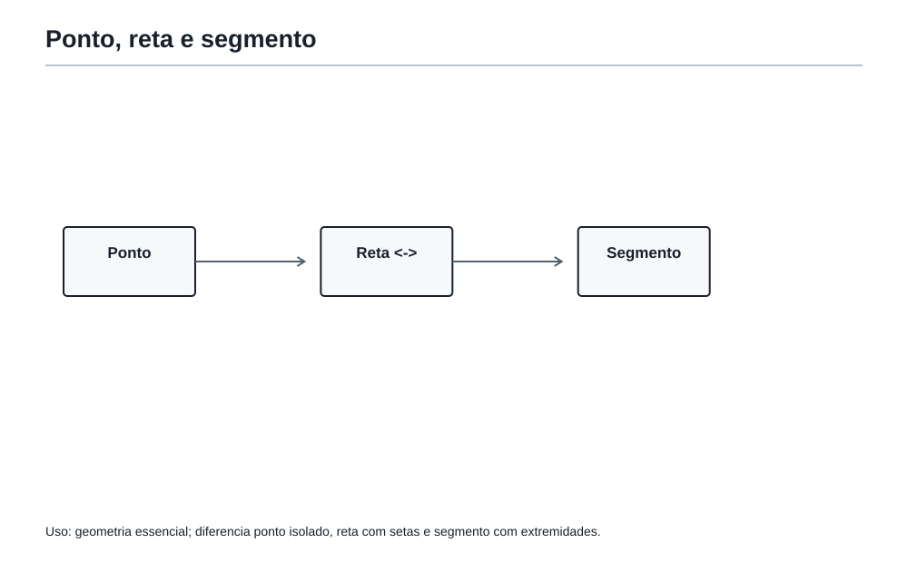
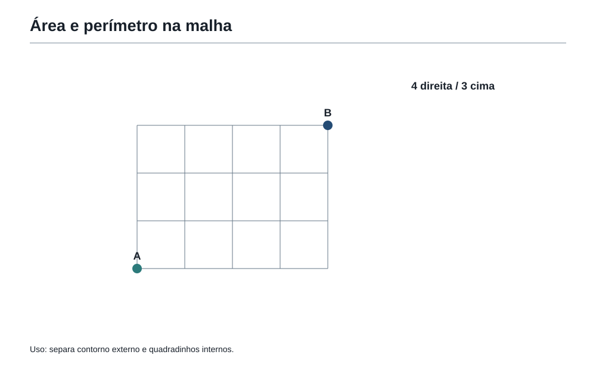
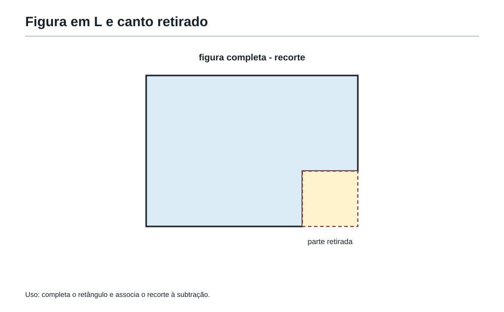
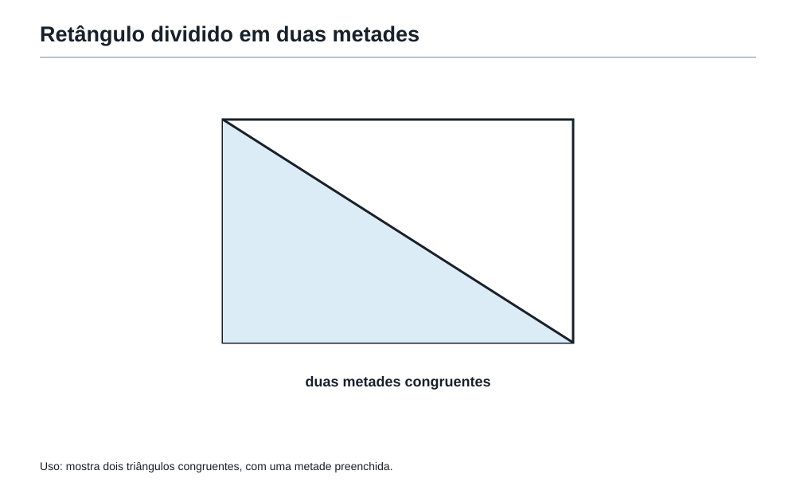
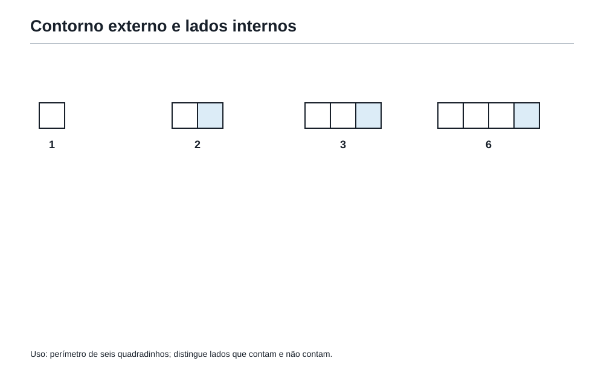

Quando o desenho ganha medida
1. Depois dos padrões visuais
Na sala anterior da Academia do Raciocínio, Felipe aprendeu que um desenho pode esconder uma regra.
Pontos formavam triângulos.
Palitos formavam quadrados em fila.
Escadas de quadradinhos cresciam andar por andar.
Mosaicos pareciam decoração, mas tinham uma estrutura.
O Professor abriu a porta seguinte e mostrou uma parede cheia de desenhos: retângulos, triângulos, caminhos, quadradinhos, cantos, linhas e figuras incompletas.
— No Capítulo 6 — disse ele — você olhava para o desenho e perguntava: “qual é o padrão?”. Agora a pergunta muda um pouco.
Felipe leu a frase escrita na entrada da sala:
Quando um desenho ganha medida, ele vira geometria.
A coruja da Academia apareceu no alto da porta.
— Então geometria é decorar nomes de figuras?
O Professor sorriu.
— Não. Geometria é aprender a medir o que os olhos enxergam.
Antes de aparecerem nomes como perímetro, área, reta, segmento e ângulo, aparece uma ideia mais simples:
Um desenho pode ter borda, espaço interno, caminho, abertura e medida.
Esse capítulo é a primeira sala dessa linguagem.
2. Ver não é o mesmo que medir
Felipe olhou para dois retângulos desenhados no quadro.
O primeiro era comprido e baixo.
O segundo era quase quadrado.
— Qual é maior? — perguntou o Professor.
Felipe respondeu rápido:
— O primeiro parece maior.
— Parece. Mas a geometria não vive só de aparência.
O Professor colocou uma malha quadriculada atrás dos dois desenhos.
O primeiro retângulo tinha 12 quadradinhos.
O segundo também tinha 12 quadradinhos.
A aparência enganou porque a forma mudou, mas a quantidade de espaço interno era a mesma.
Depois ele desenhou duas figuras com o mesmo espaço interno, mas bordas de tamanhos diferentes.
Felipe percebeu outra armadilha:
Duas figuras podem ocupar o mesmo espaço e ter bordas diferentes.
A primeira ferramenta desta sala é simples:
Antes de calcular, pergunte o que está sendo medido.
O problema quer a borda?
Quer o espaço interno?
Quer um caminho?
Quer uma abertura?
Quer uma distância?
A palavra certa depende da pergunta escondida.
3. Ponto, reta e segmento: o começo do mapa
O Professor desenhou um pequeno ponto no quadro.
— Isto é um ponto. Ele marca uma posição.
Depois desenhou uma linha que continuava para os dois lados, com setas nas extremidades.
— Isto representa uma reta. Ela indica uma direção que continua sem fim.
Por fim, desenhou apenas um pedaço de linha, com começo e fim.
— Isto é um segmento. Ele tem duas pontas e pode ser medido.
Felipe ficou olhando.
— Então, quando eu meço o lado de um quadrado, estou medindo um segmento?
— Exatamente.
O Professor escreveu:
- ponto: posição;
- reta: direção sem fim;
- segmento: pedaço de reta com começo e fim.

A ideia importante não é decorar nomes.
A ideia importante é perceber que uma figura geométrica é feita de peças: posições, caminhos, lados e regiões.
4. Caminho reto e caminho com volta
No chão da sala havia uma malha desenhada.
A coruja colocou uma ficha no canto inferior esquerdo e outra ficha no canto superior direito.
— Qual é o caminho mais curto entre elas?
Felipe apontou uma linha reta.
— Esse.
— E se eu só puder andar pelas linhas da malha, para a direita e para cima?
Agora o caminho mudava.
Felipe não podia atravessar os quadradinhos pela diagonal. Precisava seguir os corredores da malha.
O Professor explicou:
— Em geometria, o caminho permitido importa. Às vezes o caminho reto existe no desenho, mas não é permitido pela história do problema.
Essa ideia será muito útil em problemas de malha, ruas, tabuleiros e caminhos.
A pergunta escondida pode ser:
- distância em linha reta;
- caminho pela borda;
- caminho pelas ruas da malha;
- caminho em volta de uma figura;
- número de passos.
Felipe anotou mentalmente:
Não basta olhar os pontos de partida e chegada. É preciso olhar as regras do caminho.
5. Ângulos: a abertura entre dois caminhos
O Professor abriu um livro sobre a mesa.
— Veja esta abertura.
Felipe percebeu que as duas capas formavam uma espécie de canto.
Depois o Professor apontou para o canto de um caderno, para uma porta entreaberta e para o canto de um retângulo.
— Um ângulo mede uma abertura entre dois caminhos que saem do mesmo ponto.
O primeiro ângulo importante desta sala é o ângulo reto.
Ele aparece nos cantos de quadrados e retângulos.
Ele parece um canto bem “certinho”, como o canto de uma folha de papel.
O Professor desenhou um pequeno quadradinho no canto.
— Quando um problema diz que uma figura é um retângulo, ele está escondendo quatro ângulos retos.
Felipe percebeu que nomes geométricos carregam informações.
Um retângulo não é qualquer figura de quatro lados.
Ele tem lados opostos paralelos e quatro cantos retos.
Decisão de figura — dispensar. Não criar imagem separada para as três analogias de ângulo reto; a relação será sustentada pela malha e pelo retângulo desta sala, sem duplicação visual.
A coruja comentou:
— Então uma palavra pequena pode carregar muita matemática.
— Exatamente — respondeu o Professor. — Por isso geometria também é leitura.
6. Formas planas: quando linhas fecham uma região
O Professor desenhou três linhas soltas no quadro.
Elas não fechavam nada.
Depois desenhou um triângulo.
Felipe percebeu a diferença.
O triângulo fechava uma região.
— Quando linhas fecham uma parte do plano, nasce uma forma plana.
As primeiras formas desta sala são:
- triângulo;
- quadrado;
- retângulo;
- círculo.
O triângulo tem três lados.
O quadrado tem quatro lados iguais e quatro ângulos retos.
O retângulo tem quatro ângulos retos, mas seus lados vizinhos não precisam ser iguais.
O círculo não é feito de segmentos retos; ele tem uma borda curva.
Mas o Professor avisou:
— Não transforme este capítulo em lista de nomes. Nas olimpíadas, o mais importante é saber usar as figuras.
Felipe perguntou:
— Usar como?
— Medindo bordas, espaços, partes faltantes, caminhos e figuras escondidas.
7. Perímetro: o passeio pela borda
O Professor desenhou um jardim retangular.
— Imagine que você vai caminhar em volta dele, sempre pela borda, até voltar ao ponto de partida. O comprimento total desse passeio é o perímetro.
Felipe olhou para o retângulo.
O jardim tinha 8 metros de comprimento e 5 metros de largura.
O passeio completo tinha:
8 + 5 + 8 + 5 = 26 metros.
O Professor completou:
— Como lados opostos do retângulo têm a mesma medida, também poderíamos pensar em:
2 × 8 + 2 × 5 = 26
ou
2 × (8 + 5) = 26.
Mas a fórmula veio depois do passeio.
Primeiro a ideia:
Perímetro é a medida da borda.
Depois a escrita econômica.
Felipe percebeu uma coisa:
— Se o problema fala em cerca, fita em volta, contorno ou moldura, provavelmente está pedindo perímetro.
— Boa pista — disse o Professor. — Mas sempre confira a pergunta final.
8. Área: o espaço que a figura ocupa
Na mesma parede, o Professor desenhou outro retângulo.
Dessa vez colocou uma malha quadriculada dentro dele.
O retângulo tinha 6 quadradinhos de comprimento e 4 quadradinhos de largura.
Felipe contou:
6 × 4 = 24 quadradinhos.
— Isso é área? — perguntou.
— Sim. Área mede o espaço interno ocupado pela figura.
A ideia nasceu da contagem dos quadradinhos.
Depois vem a escrita econômica:
Área do retângulo = comprimento × largura.
Se cada quadradinho mede 1 cm de lado, a área é medida em centímetros quadrados: cm².
Se cada quadradinho mede 1 m de lado, a área é medida em metros quadrados: m².
O Professor avisou:
— Perímetro usa unidades de comprimento: cm, m, km. Área usa unidades quadradas: cm², m², km².
A coruja levantou uma placa:
Unidade errada costuma denunciar ideia errada.
Felipe guardou isso na Mochila.
9. A armadilha: mesma área, perímetros diferentes
O Professor desenhou dois retângulos na malha.
O primeiro tinha 1 quadradinho de altura e 12 de comprimento.
O segundo tinha 3 quadradinhos de altura e 4 de comprimento.
As áreas eram iguais:
1 × 12 = 12
3 × 4 = 12
Mas os perímetros não eram iguais.
O primeiro tinha perímetro:
12 + 1 + 12 + 1 = 26
O segundo tinha perímetro:
4 + 3 + 4 + 3 = 14
Felipe ficou surpreso.
— A mesma área pode ter uma borda muito diferente.
— Sim. Essa é uma das armadilhas mais comuns da geometria.
O Professor escreveu:
Área fala do dentro. Perímetro fala da volta.
Quando um problema mistura os dois, a primeira jogada é separar as perguntas.
A figura pode ter muita área e pouca borda.
Pode ter pouca área e borda longa.
Pode ter a mesma área de outra figura, mas perímetro diferente.
10. A malha quadriculada: a geometria fica contável
A sala seguinte tinha o chão quadriculado.
Felipe gostou, porque a geometria parecia virar contagem.
O Professor explicou:
— A malha quadriculada é um laboratório. Ela permite transformar áreas em quadradinhos, caminhos em passos e figuras compostas em partes simples.
Na malha, é possível:
- contar quadradinhos inteiros;
- juntar meios quadradinhos;
- completar uma figura até virar retângulo;
- subtrair uma parte faltante;
- acompanhar caminhos pela borda;
- perceber lados compartilhados.

O Professor desenhou uma figura irregular feita de quadradinhos grudados.
Felipe começou a contar todos os lados de todos os quadradinhos.
— Cuidado — disse a coruja.
Os lados que ficavam grudados entre dois quadradinhos não apareciam na borda externa.
Eles eram lados internos.
Para perímetro, só interessa o contorno de fora.
Para área, todos os quadradinhos contam.
11. O retângulo escondido
O Professor desenhou uma figura em forma de L.
Felipe tentou contar quadradinhos um por um.
Funcionava, mas era demorado.
— Procure uma figura conhecida escondida — sugeriu o Professor.
Felipe percebeu que o L podia ser dividido em dois retângulos.
Também percebeu outro caminho:
- imaginar um retângulo maior completo;
- retirar o retângulo pequeno que faltava no canto.
Duas estratégias, mesma área.
Se o retângulo maior tinha 5 × 4 = 20 quadradinhos e o pedaço faltante tinha 2 × 2 = 4, a figura em L tinha:
20 - 4 = 16 quadradinhos.
O Professor escreveu:
Em geometria, transformar a figura muitas vezes é melhor do que atacar a figura como ela aparece.

Essa ideia prepara a próxima sala do livro, onde figuras compostas serão desmontadas com mais profundidade.
Aqui, por enquanto, Felipe precisava aprender a enxergar o retângulo escondido.
12. Triângulos: metade de um retângulo
O Professor desenhou um retângulo de 6 por 4 quadradinhos.
Depois traçou uma diagonal, ligando um canto ao canto oposto.
A diagonal cortou o retângulo em dois triângulos iguais.
A área do retângulo era:
6 × 4 = 24
Cada triângulo ocupava metade:
24 ÷ 2 = 12
— Então a área desse triângulo é 12 quadradinhos — disse Felipe.
— Sim. A fórmula pode aparecer depois, mas a ideia é esta: alguns triângulos são metade de retângulos.
O Professor escreveu:
Quando um triângulo aparece dentro de um retângulo, pergunte se ele é metade de algo conhecido.

A coruja avisou:
— Mas nem todo triângulo do mundo vai aparecer bonitinho assim.
— Verdade — respondeu o Professor. — Por enquanto, vamos usar a ideia nos casos em que o retângulo está claro.
13. Caminhos na malha: nem sempre o caminho é diagonal
Felipe voltou ao chão quadriculado.
A ficha A estava no canto inferior esquerdo.
A ficha B estava 4 quadradinhos à direita e 3 quadradinhos acima.
Se fosse permitido voar em linha reta, haveria um caminho diagonal.
Mas o problema dizia:
Só é permitido caminhar pelas linhas da malha.
Então Felipe precisava andar 4 passos para a direita e 3 passos para cima, em alguma ordem.
O comprimento total do caminho mais curto pela malha era:
4 + 3 = 7 passos.
O Professor explicou:
— Esse tipo de caminho será importante depois, na combinatória. Por enquanto, guarde a ideia: a regra do movimento muda a medida do caminho.
Se o problema pede caminho pela malha, não use a diagonal sem permissão.
Se o problema pede contorno de uma figura, não atravesse o interior.
Se o problema pede distância reta, não caminhe pela borda.
A pergunta decide o caminho.
14. Perímetro em figuras com quadradinhos grudados
O Professor colocou seis quadradinhos no chão.
Quatro formavam uma fileira.
Dois ficavam grudados em cima dos dois quadradinhos centrais.
Felipe contou a área primeiro:
— São 6 quadradinhos.
— Certo. E o perímetro?
Felipe ia responder 24, porque cada quadradinho tem 4 lados.
Mas a coruja tossiu.
— Lados grudados não aparecem do lado de fora.
Felipe olhou com calma.
Cada lado compartilhado tirava dois lados da borda externa: um de cada quadradinho.
A figura tinha 6 lados compartilhados.
Se todos os quadradinhos estivessem separados, seriam:
6 × 4 = 24 lados.
Como havia 6 compartilhamentos, tiramos:
6 × 2 = 12 lados.
O perímetro era:
24 - 12 = 12 lados.
O Professor completou:
— Você também poderia simplesmente caminhar pela borda de fora e contar. O importante é não contar lados internos.

OBMEP15. Problema em estilo OBMEP — A cerca do jardim
Na Academia do Raciocínio há um jardim retangular de 8 metros por 5 metros.
Será colocada uma cerca em volta do jardim, mas haverá uma entrada sem cerca de 2 metros em um dos lados maiores.
Quantos metros de cerca serão necessários?
Pense alguns instantes antes de continuar.
Ver solução
Solução comentada
A cerca acompanha a borda do jardim.
Então a ferramenta é perímetro.
O perímetro completo do retângulo seria:
8 + 5 + 8 + 5 = 26 metros.
Mas existe uma entrada de 2 metros sem cerca.
Então a quantidade de cerca é:
26 - 2 = 24 metros.
Resposta: serão necessários 24 metros de cerca.
O que este problema treinou
Ele treinou a pergunta escondida:
cerca em volta → borda → perímetro.
Mas também treinou o cuidado com uma parte que não entra na conta.
OBMEP16. Problema em estilo OBMEP — O piso da sala dourada
A sala dourada da Academia tem formato retangular.
Ela mede 6 metros de comprimento e 4 metros de largura.
O piso será coberto por placas quadradas de 1 metro de lado.
Quantas placas serão necessárias para cobrir todo o piso?
Ver solução
Solução comentada
O problema fala em cobrir o piso.
Isso não é borda.
É espaço interno.
A ferramenta é área.
A área do retângulo é:
6 × 4 = 24
Cada placa cobre 1 metro quadrado.
Logo, são necessárias 24 placas.
Cuidado importante
Se alguém calculasse:
6 + 4 + 6 + 4 = 20
teria calculado o perímetro, não a área.
O número 20 mede a volta da sala.
O piso inteiro exige 24 placas.
OBMEP17. Problema em estilo OBMEP — O tapete em forma de L
Um tapete da Academia cabe dentro de um retângulo de 5 metros por 4 metros.
Mas falta um canto retangular de 2 metros por 2 metros, formando uma figura em L.
Qual é a área do tapete?
Ver solução
Solução comentada
Primeiro imagine o retângulo completo.
Área do retângulo maior:
5 × 4 = 20
Área do canto que falta:
2 × 2 = 4
Área do tapete:
20 - 4 = 16
Resposta: o tapete tem 16 metros quadrados de área.
O que este problema treinou
Ele treinou completamento e subtração:
complete a figura para formar algo simples, depois retire o que não pertence.
Essa ferramenta será aprofundada no próximo capítulo.
OBMEP18. Problema em estilo OBMEP — O triângulo do painel
Um painel retangular da Academia mede 10 cm de comprimento por 6 cm de altura.
Uma diagonal liga dois cantos opostos, dividindo o painel em dois triângulos iguais.
Qual é a área de cada triângulo?
Ver solução
Solução comentada
A área do retângulo é:
10 × 6 = 60 cm².
A diagonal divide o retângulo em dois triângulos iguais.
Então cada triângulo tem metade da área:
60 ÷ 2 = 30 cm².
Resposta: cada triângulo tem 30 cm².
Cuidado importante
A resposta precisa estar em cm², porque estamos medindo área.
Se fosse perímetro, usaríamos cm.
OBMEP19. Problema em estilo OBMEP — Os quadradinhos grudados
Uma figura é formada por 6 quadradinhos iguais.
Quatro quadradinhos estão em uma fileira horizontal.
Os outros dois estão grudados em cima dos dois quadradinhos centrais da fileira.
Cada lado de quadradinho mede 1 cm.
Qual é o perímetro da figura?
Ver solução
Solução comentada
Se os 6 quadradinhos estivessem separados, teríamos:
6 × 4 = 24 lados de 1 cm.
Mas alguns lados ficam grudados por dentro.
Vamos contar os compartilhamentos:
- na fileira de baixo, há 3 compartilhamentos horizontais;
- na fileira de cima, os dois quadradinhos compartilham 1 lado;
- os dois quadradinhos de cima ficam grudados nos dois quadradinhos centrais de baixo, criando 2 compartilhamentos verticais.
Total de compartilhamentos:
3 + 1 + 2 = 6
Cada compartilhamento tira 2 lados da borda externa.
Então tiramos:
6 × 2 = 12
Perímetro:
24 - 12 = 12 cm.
Resposta: o perímetro da figura é 12 cm.
O que este problema treinou
Ele treinou a ideia:
Para área, quadradinhos grudados continuam contando. Para perímetro, lados internos desaparecem.
OBMEP20. Problema em estilo OBMEP — O caminho em volta da praça
Uma praça da Academia ocupa uma região retangular de 7 metros por 3 metros.
Felipe quer dar uma volta completa pela borda da praça e voltar ao ponto de partida.
Quantos metros ele caminhará?
Ver solução
Solução comentada
A frase “volta completa pela borda” indica perímetro.
O retângulo tem dois lados de 7 metros e dois lados de 3 metros.
Então:
7 + 3 + 7 + 3 = 20
Felipe caminhará 20 metros.
Pergunta extra
A área da praça seria:
7 × 3 = 21 m².
Veja como os dois números aparecem próximos, mas respondem perguntas diferentes.
A borda mede 20 metros.
O espaço interno mede 21 metros quadrados.
Oficina21. Oficina Olímpica 6 — Bordas, áreas e figuras escondidas
Agora é hora de treinar sem pressa.
Use o caderno se quiser.
O objetivo não é apenas responder. É escolher a ferramenta certa.
Desafio 1 — A moldura
Um quadro retangular mede 12 cm por 8 cm.
Uma fita será colada em volta do quadro.
Quantos centímetros de fita serão necessários?
Solução:
Fita em volta indica perímetro.
12 + 8 + 12 + 8 = 40
Resposta: 40 cm.
Desafio 2 — A capa do caderno
A capa de um caderno mede 21 cm por 15 cm.
Qual é a área da capa?
Solução:
Área do retângulo:
21 × 15 = 315
Resposta: 315 cm².
Desafio 3 — Mesma área, outra borda
Compare dois retângulos:
- Retângulo A: 2 cm por 12 cm.
- Retângulo B: 4 cm por 6 cm.
Eles têm a mesma área? E o mesmo perímetro?
Solução:
Áreas:
2 × 12 = 24
4 × 6 = 24
Têm a mesma área.
Perímetros:
2 + 12 + 2 + 12 = 28
4 + 6 + 4 + 6 = 20
Não têm o mesmo perímetro.
Desafio 4 — O canto retirado
Uma figura cabe em um retângulo de 9 por 5 quadradinhos, mas foi retirado um canto de 3 por 2 quadradinhos.
Qual é a área da figura restante?
Solução:
Retângulo completo:
9 × 5 = 45
Canto retirado:
3 × 2 = 6
Área restante:
45 - 6 = 39
Resposta: 39 quadradinhos.
Desafio 5 — Metade do retângulo
Um retângulo mede 14 cm por 5 cm.
Uma diagonal o divide em dois triângulos iguais.
Qual é a área de cada triângulo?
Solução:
Área do retângulo:
14 × 5 = 70 cm².
Cada triângulo é metade:
70 ÷ 2 = 35 cm².
Resposta: 35 cm².
Desafio 6 — O erro da unidade
Um estudante respondeu:
A área de um retângulo de 8 cm por 3 cm é 24 cm.
O número está certo? A unidade está certa?
Solução:
A conta está certa:
8 × 3 = 24.
Mas a unidade está errada.
Área usa unidade quadrada.
Resposta correta: 24 cm².
22. As ferramentas da Mochila nesta sala
Nesta sala, Felipe não ganhou uma lista de fórmulas para decorar.
Ele organizou ferramentas que serão usadas em muitos problemas da OBMEP.
-
Observar a figura antes de calcular.
A figura costuma esconder caminhos, partes, bordas e regiões. -
Distinguir borda e interior.
Perímetro mede a volta. Área mede o espaço ocupado. -
Procurar palavras-sinal.
Cerca, moldura, contorno e volta costumam indicar perímetro. Piso, cobertura, pintura e espaço ocupado costumam indicar área. -
Usar retângulos como blocos básicos.
Retângulos são peças fortes porque sua área nasce de linhas e colunas. -
Dividir ou completar figuras.
Figuras difíceis podem virar figuras simples. -
Cuidar das unidades.
Comprimento usa cm, m, km. Área usa cm², m², km². -
Ignorar lados internos no perímetro externo.
Quadradinhos grudados compartilham lados que não aparecem na borda. -
Enxergar figuras conhecidas escondidas.
Um L pode esconder retângulos. Um triângulo pode esconder metade de um retângulo.
23. Figuras aplicadas no ponto de uso
As especificações aprovadas estão nos pontos de vocabulário, malha, recorte, diagonal e quadradinhos. A analogia repetida do ângulo reto foi dispensada por duplicar a mesma compreensão.
24. A frase da Academia
A figura não entrega a resposta para quem olha com pressa. Ela entrega pistas para quem sabe perguntar.
25. Pergunta para amanhã
E quando uma figura é formada por pedaços, buracos, sobreposições e partes que se encaixam?
Como calcular sua área sem se perder?
A próxima sala da Academia aprofunda essa pergunta.
O desenho já ganhou medida.
Agora ele vai aprender a ser montado e desmontado.